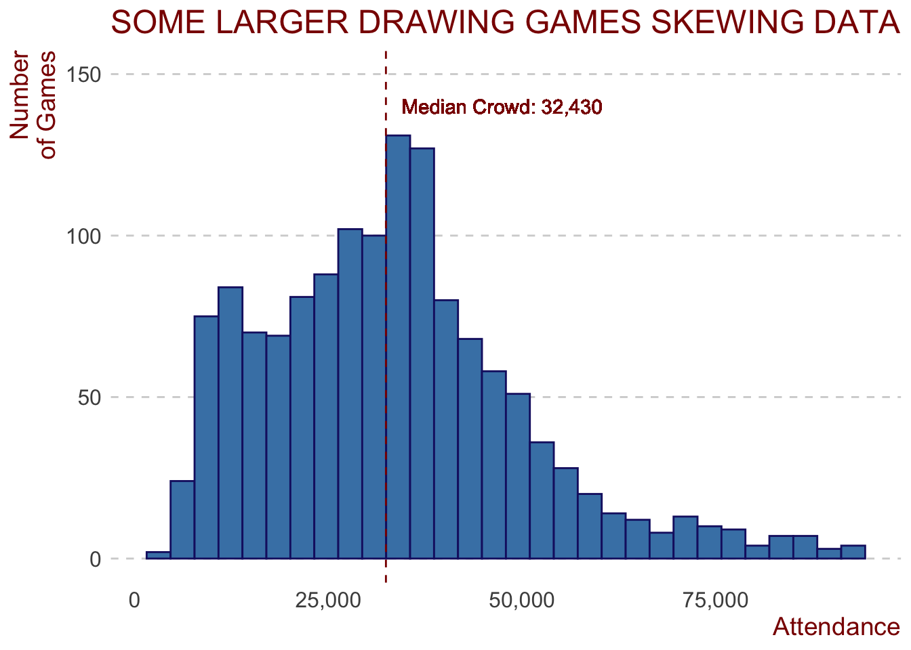
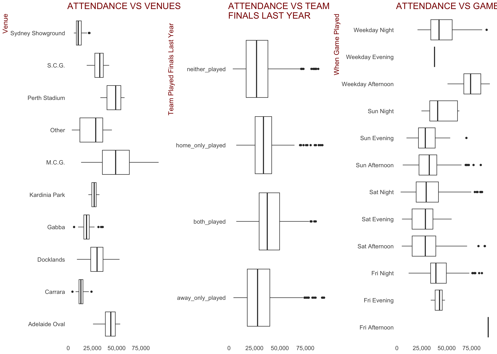
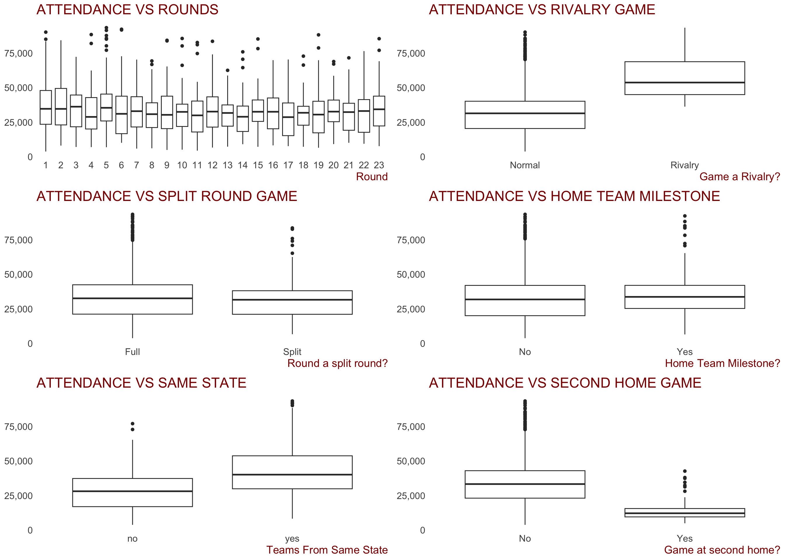
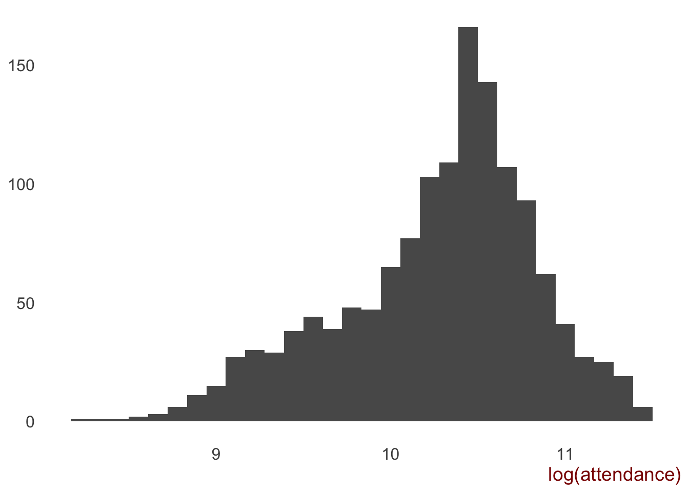
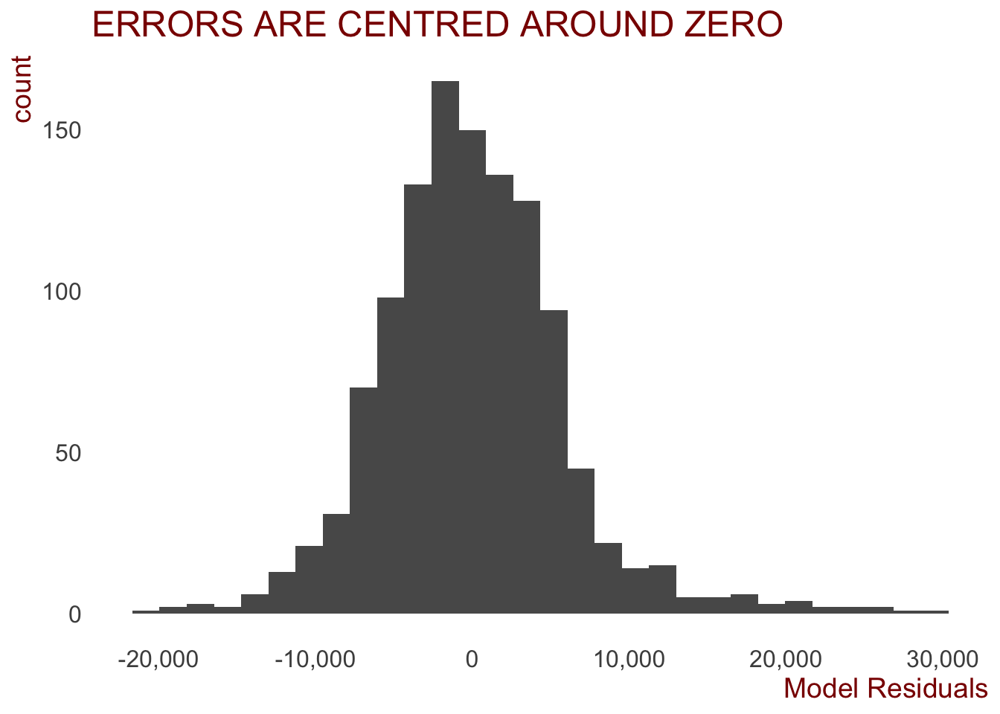
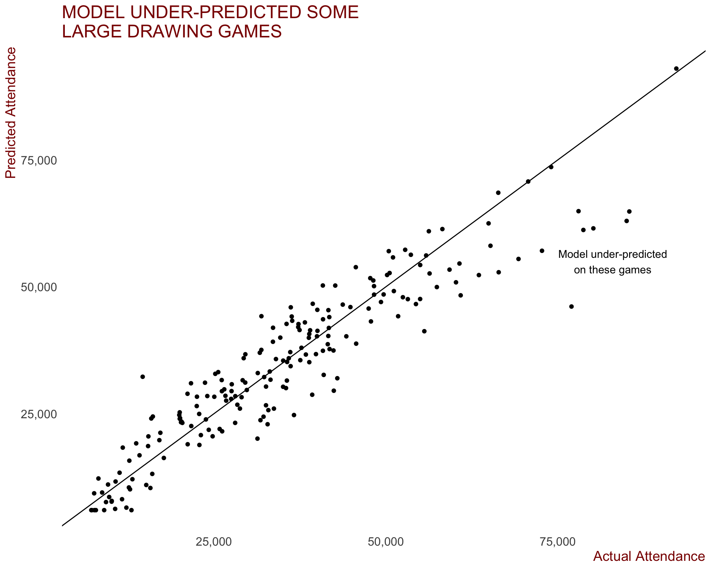
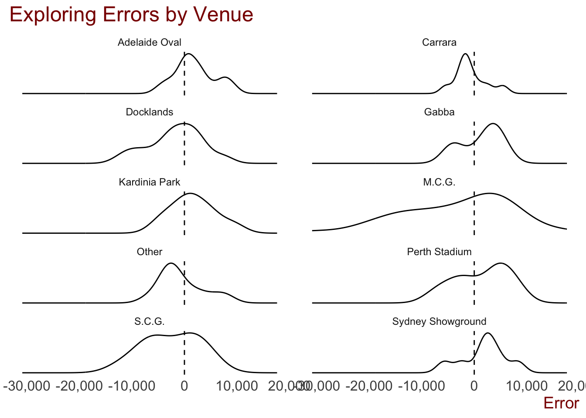

Introduction
There is a lot of talk about crowd behaviour and crowd issues with the modern day AFL. I personally feel the crowd issues are a case of business-as-usual; I’ve been going to AFL games on-and-off for close to three decades and the crowd behaviour is no different today as it was 20 years ago… just now everyone with a phone and Twitter account is a journo.
Anyway, that’s my two cents worth. This analysis is not on crowd behaviour. This post is primarily concerned with building a model to predict AFL crowds during the season proper. While data was collected since the beginning of the 2000 season, the model will be bult on training data from the beginning of the 2013 season to the end of the 2018 season (Finals series excluded), with the trained model then used to predict the attendance figures of AFL games during the 2019 season up until round 18 which concluded on Sunday 21st July, 2019. The linear model will be built using R (version 3.5.3) in RStudio.
This post is a follow up to my introductory analysis done on bandwagon fans. It can be found here.
The article was inspired by the amazing work Tony Corke does, specifically his post on The Predictability of AFL Crowds.
All code for this project can be found on GitHub here
The Data
Three sources of data were used in the project:
- AFL Tables was used as the primary source of information. This is no doubt the go to for anyone looking at doing AFL analysis
- Australian Sports Betting was used to get betting data for matches from the 2013 season
- Australian Bureau of Meteorology was used for climat data (rain and temperature). Part of the scraper for BOM data was taken from James Day’s fitzRoy R package. Big thanks to him. The rain and temperature data had some missing observations. Missing rain data was filled by averaging out the next taken reading over the missed data points before it. Missing temperature was filled taking the average temperature for that month.
Feature Engineering
The data contained at AFL Tables is a rich source of information, but some steps were needed to glean some additional information from the data.
The original three data sources combined contained approximately 35 variables for potential use. Feature engineering (the process of creating additional explanatory variables to use in a predictive model) was then conducted and resulted in ~95 features in total to see if they would ultimately be added to the final model to be used.
Features Created
Based on some feedback from the Banwagon article and other things that I wanted to explore, some new features were created to see if they had any predictive power.
Take the game start time as an example - having the time is great, but a regression model may find it better to categorise the time to a period of the day to reduce some of the noise. So, with that in mind, a feature (time_period) was created - if the game started by 5pm, I have classified it as an afternoon game. Games started between 5pm-7pm were classified as evening games, while games later than this were night games.
Additionally, the day of the week and the time_period were joined into one variable game_time to use in the model. For example, if it was a Saturday game starting at 5:30pm, it was classified as “Sat-Evening”.
Venues that were used infrequently, or more accurately, weren’t the teams primary “home” stadium were labelled as “Other”. There were 94 games played at these venues, and this includes at stadiums like Eureka Stadium, Cazaly’s Stadium, Traeger Park, and international venues Wellington in NZ and Jiangwan Stadium in China.
Another feature was created to determine rivalry games - the thinking being that when two fierce rivals face off against each other, the crowds will come. To be a rivalry game, a few different options existed. The first contains the four oldest traditional rivals, all from Melbourne - Collingwood, Richmond, Essendon and Carlton (hold your Carlton opinions, I know they’ve been horrible but their fans still turn up to these rivalry games). The Derby in SA (The Showdown between Adelaide and Port Adelaide) and in WA (Western Derby between West Coast and Fremantle) are also classed as rivalry games.
After hearing a key AFL staffer talk a few years back talk about betting markets being a strong predictor of attendances, I collected betting data to test this assumption. A number of features were created in addition to the raw odds and line data scraped. These included calculating the differences between the odds of the home and away team and also calculating the change in betting throughout the week.
Features were also created of the average experience of both the home and away teams, as were milestone games (where players of either team are playing in their 100, 200, 250 or 300th games).
Each team’s last game result was calculated, as was the number of wins each team had in their previous three games. Additionally, whether the team played finals the previous season was identified.
A ladder at each round was created and ladder position, percentage and score for and against was explored as possible features for the end model.
A feature was also created to identify games played by teams from the same state or not.
Exploratory Data Analysis
Before we start building the model, we need to understand both the response and predictor variables. The most effective way to do this is through visualisations, and what package is better to use than ggplot2!
This section will contain some Exploratory Data Analysis (more commonly known as ‘EDA’), which is a natural first step in any data analysis project. It is an extrememly important step and allows the analyst to inspect the data - what shape does the target and predictor variables have, are there any correlations between the variables that may be included in a predictive model, are there any outliers in the data, or any missing data… you get the point, EDA is very important!
Well there is no missing data in the dataset being used… that has all been cleaned in the pre-processing stage that can be found in this R code.
The Response Variable - Attendance
Let’s look at our response variable - or the thing we’re trying to predict - attendance at AFL premiership season games.
We can see that the attendance figures are somewhat positively skewed. We’ll see if the few higher attendance games cause any issues later on. This variable may need to undergo some form of transformation, but more on that later.
The median attendance to AFL games during the regular season is just under 32,500 for the 1,340 games played since 2013.
Some Key Predictors
Code
data_for_model <- afl_premiership_season %>%
select(season, attendance, team1, team2, round, venue, game_time, home_median_experience, home_mean_experience, away_median_experience, away_mean_experience, home_300, home_milestone, away_300, away_milestone, count_milestones, rainfall_clean, min_temp, max_temp, last_five_days_rain, temperature_diff, HomeOddsOpen, AwayOddsOpen, HomeLineOpen, AwayLineOpen, odds_diff, rivalry_game, HomeTeamFav, team1_last_result, team2_last_result, split_round, home_team_finals_last_season, away_team_finals_last_season, season_stage, temperature, IsHomeMilestone, IsAwayMilestone, count_milestones, last_results, home_team_state, away_team_state, is_same_state, temperature_diff, home_odds_change, away_odds_change, home_line_change, away_line_change, second_home_game, home_season_points, home_score_for, home_percentage, home_ladder_pos, away_wins_last_three, away_season_points, away_score_for, away_percentage, away_ladder_pos, teams_in_eight, finals_last_season, home_wins_last_three, away_wins_last_three) %>% na.omit()As was evident in the first post of this series, there was noticeable variation in attendances between the teams, and also whether teams won or lost their previous game. Finally, the first post showed that the home team’s favouritism status also seemed to have a relationship with attendance.
Categorical Features:
Some of the key categorical variables created that we would expect to have an impact on crowd figures are displayed below.


Some observations:
There appears to be a relationship between the venue the game is played at and the attendance. Stadiums classified as
Otherinclude secondary home grounds and some of the ovals not used in 2019. There were 238 of the 1,340 games at these stadiumsWhether either the home or away team played finals last year seems to have a weak relationship with attendance. It may be useful to include in our model
When the game is played and attendance appear to be related.
Weekday AfternoonandFriday Afternoonare high because of ANZAC day clashes between Essendon and Collingwood no doubt. Friday and Sunday night games seem to draw better crowds. Could be a useful predictorThere appears to be some variance in attendance figures between the different rounds during a season. Could be a useful predictor
Games classed as “Rivalry Games” clearly draw larger attendances than non-rivalry games. Could be a useful predictor
Whether the round was a split round (where some teams have a bye, or week off) or not doesn’t appear to be related to attendances. Might not be a useful predictor
There appears to be slightly higher crowds when the home team has a player playing a milestone (either a 100, 200, 250 or 300th game), but the relationship certainly doesn’t appear strong. Might not be a useful predictor
When the two competing teams are from the same state, crowds appear to be higher. Could be a useful predictor
To be expected, games where the home team is playing the game at their second home ground (Hawthorn and North in Tasmania, Melbourne, Western Bulldogs in Darwin, etc) draw lower crowds. This is probably more to do with lower statium capacities, but may still be a useful feature
Numerical Features:
To explore the relationship between the numerical features and attendance, Pearson’s correlation will be employed.
Using dplyr to select just the numerical features and then calculate the correlations on the converted matrix yields the below correlations with attendance.
Code
numeric_features <- data_for_model %>% select_if(is.numeric)
numeric_features %>%
as.matrix() %>%
cor() %>% .[,"attendance"] %>% sort(decreasing = T) attendance home_mean_experience home_percentage
1.00000000 0.26242775 0.23603629
home_median_experience home_wins_last_three away_mean_experience
0.23224717 0.17740024 0.16024146
away_median_experience home_season_points away_percentage
0.12698259 0.10829187 0.10549367
away_wins_last_three season AwayLineOpen
0.08874187 0.06906937 0.06717077
temperature_diff count_milestones home_line_change
0.04693253 0.04502199 0.03176978
away_milestone home_300 home_milestone
0.02947022 0.02805048 0.02612771
away_season_points away_300 home_odds_change
0.01964212 0.01305329 0.01234577
away_odds_change home_score_for away_line_change
-0.01732249 -0.02851372 -0.03176978
AwayOddsOpen rainfall_clean away_score_for
-0.05413613 -0.06190488 -0.06313146
HomeLineOpen last_five_days_rain round
-0.06717077 -0.08122135 -0.08681637
max_temp min_temp away_ladder_pos
-0.09200801 -0.13811543 -0.15435393
HomeOddsOpen odds_diff temperature
-0.15999933 -0.16722767 -0.20128979
home_ladder_pos
-0.27541679 While all correlations appear to be fairly weak, the following observations can be made:
The average experience (
home_mean_experience) for the home team, calculated as the average games played by each player at each game they play in, yields the highest Pearson correlation with attendance of 0.264The Home team’s percentage (scores for / scores against) also have a correlation above 0.2 at 0.236
The number of wins the home team had in their last three games had a Pearson correlation of 0.175, while the correlation of away team’s average playing experience was 0.159
Strangely, the home team’s ladder position had a negative correlation, with a Pearson correlation of -0.273. The away team’s ladder position also had a negative correlation of -0.150
Betting data shows some relationships; as the
HomeOddsOpenincrease, theattendancetends to decrease, which is somewhat expected. Theodds_diffvariable (the difference between the home teams opening odds and the away teams) also has a weak negative relationship (correlation -0.168)Weather data shows some relationships. As expected, the maximum temperation and rainfall, both on the day and the accumulation of last five day’s rainfall has a negative relationship with attendance (-0.091, -0.081 and -0.65 respectively)
Building the model
In any project that aims to build a machine learning model to predict the outcome of some response variable, it’s important to hold out a subset of your data when training the model. These two sets are generally referred to as training and test sets. The training set is what you pass to the model to build, and then the resulting predictions are made on the data the model hasn’t “seen”, to best mimic real life examples.
In this case, the model will be trained on data from the 2013 to 2018 seasons inclusive (afl_pre_2019), with the predictions then made on 2019 data that the model hasn’t seen, afl_2019. This is done to ensure the model doesn’t “overfit” the data. Models that overfit the data generally perform worse on unseen accurrences.
Things that were attempted but not included in the model
The following features were thought to have some validity but when run through the model were found to have no predictive power:
- The number of wins the teams had in their last three games didn’t contribute
- The rainfall on the day had no predictive power (however the total rainfall for the five days leading up to game day did)
- Milestone games made the model perform worse
What’s missing / would be good to have
There is some information that wasn’t available publicly (or I didn’t try to get) which may prove handy in any future modelling work. These include:
- Ticket pricing for games during each season to explore the effect ticket pricing has on attendance
- Whether tickets were given away to fans for games and whether that had an impact on attendances
- Any social media posts / newspaper text analysis regarding teams / topical matters involving players playing in games, etc
Code
afl_pre_2019 <- data_for_model %>% filter(season < 2019, season >= 2013)
afl_2019 <- data_for_model %>% filter(season == 2019)Baseline Model
Before building a model to predict games, we want a baseline model to be able to compare to. The temptation would be there to use the average crowd for each game as a baseline, but the different venue capacities make this less than relevant. As a result, to calculate the baseline model, I will use the median attendance for each vanue (taking the average of the venues labelled “Other” as a whole), for each home-away team combo. For example, Collingwood(H) vs Essendon(A) is different to Essendon(H) vs Collingwood(A). The median is used because of the slightly skewed nature of AFL crowds.
Code
median_attendances <- afl_pre_2019 %>%
group_by(team1, team2, venue) %>%
summarise(baseline_attendance = median(attendance)) %>% ungroup()
baseline <- afl_2019 %>% select(team1, team2, venue, attendance) %>%
left_join(median_attendances, by = c("team1", "team2", "venue")) %>%
filter(!is.na(baseline_attendance))Using the average attendances per ground as our baseline, an RMSE of 6,816 and a mean absolute error of 4,958 is achieved. Any model that is built from here needs to be better than this.
Transforming Response Variable
Because of the somewhat skewed nature of our response variable, it might be wise to undergo some sort of transformation to normalise it more. A log transformation is routinely used to “unskew” data. Below is the result of log transforming the attendance variable.
It looks less skewed than the non-transformed variable, however (spoiler alert), the models performed worse with attendance being log transformed.

Feature Selection Using Stepwise Method
A popular method to select which features go into a model is using stepwise regression. This can either be performed:
- forward, where variables are added one by one, with only those that improve the model’s explainability (R-squared) retained,
- backward, which starts with all variables, then removes them if they don’t add value to the model’s explainability, or
- both, which is an ensemble of both forward and backward feature selection.
Using stepwise in both directions maximised the model’s Adjusted R-squared measure at 0.87.
When performing linear regression, we want to ensure there is no collinearity between the variables. One way to asses this is to calculate the Variable Inflation Factor (VIF). This is made easy with the vif function in the car package. A VIF above 5 is considered to be too high.
While the round the game is played is just over 5 (5.7), we will keep this in, however odds_diff and home_score_for will be removed from the full model selected using stepwise and re-run.
Code
full_model <- lm(attendance ~ ., data = afl_pre_2019)
# Set seed for reproducibility
set.seed(123)
step.model <- MASS::stepAIC(full_model, direction = "both",
trace = FALSE)Code
car::vif(step.model) GVIF Df GVIF^(1/(2*Df))
team1 3.760325e+07 17 1.670324
team2 8.911787e+00 17 1.066449
round 3.249472e+01 1 5.700414
venue 1.490291e+07 9 2.503312
game_time 3.502667e+00 11 1.058633
home_milestone 1.077704e+00 1 1.038125
rainfall_clean 1.600109e+00 1 1.264954
min_temp 2.442144e+00 1 1.562736
max_temp 2.943632e+00 1 1.715702
last_five_days_rain 1.624607e+00 1 1.274601
HomeOddsOpen 7.850335e+01 1 8.860212
AwayOddsOpen 1.469414e+02 1 12.121938
HomeLineOpen 1.017707e+01 1 3.190152
odds_diff 1.645084e+02 1 12.826085
rivalry_game 1.682047e+00 1 1.296937
split_round 1.097575e+00 1 1.047652
last_results 1.901405e+00 3 1.113044
is_same_state 2.561134e+00 1 1.600354
home_season_points 1.171072e+01 1 3.422093
home_score_for 4.401100e+01 1 6.634079
away_season_points 1.013471e+01 1 3.183506
away_ladder_pos 8.299211e+00 1 2.880835
teams_in_eight 1.384744e+01 3 1.549631
home_team_finals_last_season 1.855485e+00 1 1.362162Code
# the backward selection model include a variable with hi collinearity (VIF = 12). Will recreate model without odds_diff
full_model_clean <- lm(attendance ~ team1 + team2 + round + venue + game_time +
home_milestone + rainfall_clean + min_temp + max_temp + last_five_days_rain +
HomeOddsOpen + AwayOddsOpen + HomeLineOpen +
rivalry_game + split_round + last_results + is_same_state +
home_season_points + away_season_points +
away_ladder_pos + teams_in_eight + home_team_finals_last_season,
data = afl_pre_2019)
# summary(full_model_clean)
car::vif(full_model_clean) GVIF Df GVIF^(1/(2*Df))
team1 3.221921e+07 17 1.662750
team2 8.429548e+00 17 1.064706
round 1.151616e+01 1 3.393547
venue 1.470969e+07 9 2.501498
game_time 3.423992e+00 11 1.057540
home_milestone 1.074063e+00 1 1.036370
rainfall_clean 1.588738e+00 1 1.260451
min_temp 2.440252e+00 1 1.562131
max_temp 2.939080e+00 1 1.714374
last_five_days_rain 1.623319e+00 1 1.274095
HomeOddsOpen 2.900135e+00 1 1.702978
AwayOddsOpen 3.400223e+00 1 1.843969
HomeLineOpen 9.825720e+00 1 3.134600
rivalry_game 1.680106e+00 1 1.296189
split_round 1.096713e+00 1 1.047241
last_results 1.885393e+00 3 1.111477
is_same_state 2.559836e+00 1 1.599949
home_season_points 7.899789e+00 1 2.810656
away_season_points 9.963380e+00 1 3.156482
away_ladder_pos 8.290049e+00 1 2.879245
teams_in_eight 1.339704e+01 3 1.541114
home_team_finals_last_season 1.848796e+00 1 1.359704The cleaned model’s Adjusted R-squared is 0.8652, while the RMSE was 6,474 and MAE 4,855. These results better the baseline model, but only just.
Best model:
Determining the “best” model is an interesting exercise. If the explainability powers of the model is what we’re after, then we want to maximise the Adjusted R-squared metric. This analysis is aimed at maximising the success of predicting crowds, and as such, the Root Mean Squared Error (RMSE) or Mean Absolute Error (MAE) are the metrics we’re going to focus on. Both measures can be related back to the response variable - attendance - the difference being that MAE is the average absolute error of the model (difference between prediction and actual), while the RMSE penalises the model the larger the error.
For both RMSE and MAE, the below model results in the lowest RMSE and MAE when applied to the 2019 season games.
Code
set.seed(123)
fit_lm <- lm(attendance ~ team1 + team2 + round + venue + game_time + I(HomeLineOpen * home_ladder_pos) + rivalry_game + last_results + last_five_days_rain + max_temp + min_temp + home_mean_experience + away_mean_experience + is_same_state + home_score_for + I(home_percentage * home_ladder_pos) + I(home_wins_last_three * round) + round * finals_last_season, data = afl_pre_2019)
summary(fit_lm)$adj.r.squared[1] 0.8582593The Adjusted R-Squared of the model is 0.858, indicating that almost 86% of the variablility in AFL attendances in the training set (2013-2018) is explained by the model.
Interaction Terms
Features were not only used on their own in this model. Interaction terms wera also employed. The following features were combined to form a feature and gave the model a boost in predictive power:
I(HomeLineOpen * home_ladder_pos)I(home_percentage * home_ladder_pos)I(home_wins_last_three * round)round * finals_last_season
Analysing the best model
The first thing we want to do is ensure the residuals are normally distributed to satisfy the condition of normality for linear models.
The below histogram suggests that the errors are fairly normally distributed and centred around zero. A good sign.
Code
ggplot(data = data.frame(fit_lm$residuals), aes(x= fit_lm.residuals)) +
geom_histogram() +
ggtitle("ERRORS ARE CENTRED AROUND ZERO") +
scale_x_continuous(labels = comma, name = "Model Residuals")
Code
# ggsave("plots/prediction_plots/errors_hist.png", width = 30, height = 22, units = "cm")Then we can look at the coefficients of each of the predictor variables.
To make inspecting these easier, the broom package was used. Using the tidy() function, the results of the summary lm output are nicely displayed in a DF.
The coefficients for each of the predictor variables (other than home and away teams) are displayed below.
Code
a <- broom::tidy(fit_lm) %>% mutate(p.value = round(p.value, 5))
a %>% filter(!str_detect(term, "team1"), !str_detect(term, "team2")) %>%
kableExtra::kable(format = "html", escape = F) %>%
kableExtra::kable_styling("striped", full_width = F) | term | estimate | std.error | statistic | p.value |
|---|---|---|---|---|
| (Intercept) | 61007.772536 | 7066.622895 | 8.6332288 | 0.00000 |
| round | -628.797448 | 147.199874 | -4.2717255 | 0.00002 |
| venueCarrara | -9384.433835 | 4893.988254 | -1.9175432 | 0.05543 |
| venueDocklands | 2025.790428 | 1843.347042 | 1.0989740 | 0.27202 |
| venueGabba | -12078.813180 | 7915.867406 | -1.5258989 | 0.12732 |
| venueKardinia Park | -790.290125 | 2477.093571 | -0.3190393 | 0.74976 |
| venueM.C.G. | 14604.069479 | 1859.992224 | 7.8516831 | 0.00000 |
| venueOther | -11316.633901 | 1521.161777 | -7.4394677 | 0.00000 |
| venuePerth Stadium | 2344.181828 | 2119.734512 | 1.1058846 | 0.26902 |
| venueS.C.G. | -6985.844583 | 2854.176355 | -2.4475869 | 0.01454 |
| venueSydney Showground | -13915.330942 | 2344.860834 | -5.9343952 | 0.00000 |
| game_timeFri Evening | -14669.992661 | 7858.171556 | -1.8668456 | 0.06219 |
| game_timeFri Night | -26232.422896 | 6419.398624 | -4.0864300 | 0.00005 |
| game_timeSat Afternoon | -27517.789656 | 6413.609760 | -4.2905307 | 0.00002 |
| game_timeSat Evening | -28587.419367 | 6425.144735 | -4.4493036 | 0.00001 |
| game_timeSat Night | -27304.481145 | 6416.346545 | -4.2554561 | 0.00002 |
| game_timeSun Afternoon | -28302.693645 | 6410.217064 | -4.4152473 | 0.00001 |
| game_timeSun Evening | -30499.992506 | 6441.388865 | -4.7350025 | 0.00000 |
| game_timeSun Night | -29709.469650 | 6969.788830 | -4.2626069 | 0.00002 |
| game_timeWeekday Afternoon | -6264.436854 | 6587.953778 | -0.9508927 | 0.34187 |
| game_timeWeekday Evening | -32666.780662 | 8987.962304 | -3.6345035 | 0.00029 |
| game_timeWeekday Night | -24296.860101 | 6490.825702 | -3.7432618 | 0.00019 |
| I(HomeLineOpen * home_ladder_pos) | -3.929212 | 0.897336 | -4.3787523 | 0.00001 |
| rivalry_gameRivalry | 4243.471176 | 1103.664170 | 3.8448935 | 0.00013 |
| last_resultsboth_won | 3278.290173 | 599.102681 | 5.4720005 | 0.00000 |
| last_resultsonly_away_team_won | 1354.077316 | 536.942587 | 2.5218289 | 0.01181 |
| last_resultsonly_home_team_won | 1381.030990 | 594.706552 | 2.3222058 | 0.02040 |
| last_five_days_rain | -44.287937 | 12.297250 | -3.6014505 | 0.00033 |
| max_temp | 310.452321 | 61.108889 | 5.0803137 | 0.00000 |
| min_temp | -125.802409 | 59.279520 | -2.1221901 | 0.03404 |
| home_mean_experience | 25.443372 | 14.678437 | 1.7333843 | 0.08331 |
| away_mean_experience | 45.390519 | 14.339468 | 3.1654256 | 0.00159 |
| is_same_stateyes | 8151.587887 | 601.638591 | 13.5489778 | 0.00000 |
| home_score_for | 7.394136 | 1.692602 | 4.3685025 | 0.00001 |
| I(home_percentage * home_ladder_pos) | -294.795766 | 66.179029 | -4.4545193 | 0.00001 |
| I(home_wins_last_three * round) | 3.645874 | 19.738164 | 0.1847119 | 0.85349 |
| finals_last_seasonboth_played | 1691.406848 | 1188.541482 | 1.4230945 | 0.15499 |
| finals_last_seasonhome_only_played | 953.657176 | 1235.936253 | 0.7716071 | 0.44051 |
| finals_last_seasonneither_played | 482.072356 | 1101.460684 | 0.4376664 | 0.66171 |
| round:finals_last_seasonboth_played | 17.403974 | 83.889701 | 0.2074626 | 0.83569 |
| round:finals_last_seasonhome_only_played | -13.710531 | 82.253765 | -0.1666858 | 0.86765 |
| round:finals_last_seasonneither_played | 21.455146 | 76.032301 | 0.2821846 | 0.77785 |
Code
actual_2019crowds <- afl_2019$attendance
# fit linear model
afl_2019$predicted_attendance <- predict(fit_lm, afl_2019)
# put a floor on AFL attendances - surely the AFL doesn't let the crowd fall below 6,000
afl_2019$predicted_attendance <- ifelse(afl_2019$predicted_attendance < 6000, 6000, afl_2019$predicted_attendance)
# calculate the errors
error <- afl_2019$predicted_attendance - afl_2019$attendanceThen we want to annalyse how well the model fit the relationship. This can be achieved by plotting the actual vs predicted values on a scatterplot.
I can be seen that the linear model does a fairly good job on average. There model did under-predict some of the larger drawing games, while also predicting an attendance of over 30,000 to the Hawthorn vs GWS game at the MCG in round 8, which only drew 14,636 fans.
Code
afl_2019 %>%
ggplot(aes(x=attendance, y= predicted_attendance)) +
geom_point() +
geom_abline(slope = 1, intercept=0) +
ggtitle("MODEL UNDER-PREDICTED SOME\nLARGE DRAWING GAMES") +
scale_x_continuous(labels = comma, name = "Actual Attendance") +
scale_y_continuous(labels = comma, name = "Predicted Attendance") +
annotate(geom = "text", x=83000, y= 55000, label = "Model under-predicted\non these games")
Code
# ggsave("plots/prediction_plots/actual_v_pred.png", width = 30, height = 22, units = "cm")We can also look at how the model performed predicting crowds at each of the venues.
Code
afl_2019 %>%
mutate(error = predicted_attendance - attendance) %>%
ggplot(aes(x= error)) +
geom_density() +
geom_vline(xintercept = 0, linetype = 2) +
facet_wrap(~ venue, scales = "free_y", ncol = 2) +
scale_x_continuous(labels = comma, name = "Error") +
ggtitle("Exploring Errors by Venue") +
theme(axis.text.y = element_blank(), axis.title.y = element_blank())
Code
# ggsave("plots/prediction_plots/venue_errors.png", width = 30, height = 22, units = "cm")The model tended to over-predict attendances at the Gabba, Perth Stadium, Sydney Showgrounds and even the MCG, while it under-predicted at Carrara and “Other”.
Code
print(paste0("RMSE: ", sqrt(mean(error^2, na.rm = T))))[1] "RMSE: 6601.69023180541"Code
print(paste0("MAE: ", mean(abs(error), na.rm = T)))[1] "MAE: 4881.5087837533"Overall Performance of the Model
The final model selected achieved an RMSE of 5,953 and MAE of 4,466, meaning that on average, the model is off by just under 4,500 fans when predicting attendances. When compared to the baseline model (RMSE of 6,816 and a MAE of 4,958), this model betters the baseline by over 500 people on average, but also doesn’t have as many extreme errors.
Conclusion
Hopefully you’ve made it to here!
I’d love to hear from you with any feedback / corrections / etc in the comments or get in touch.
Thanks!